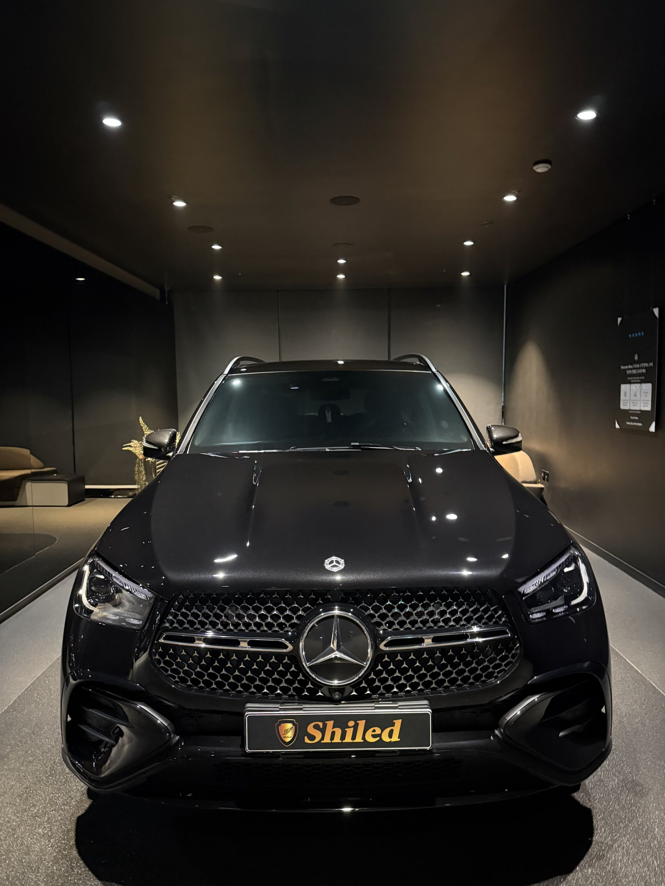
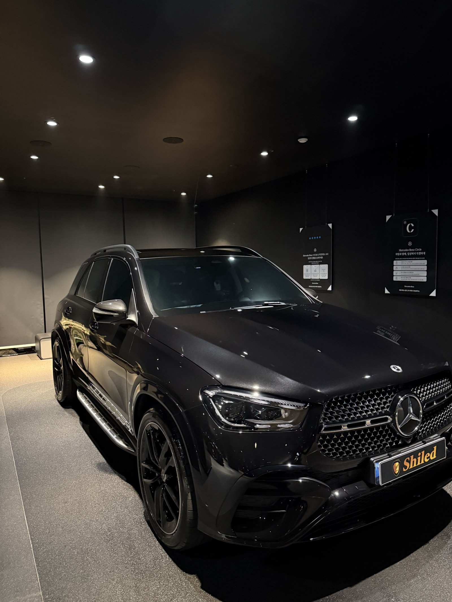
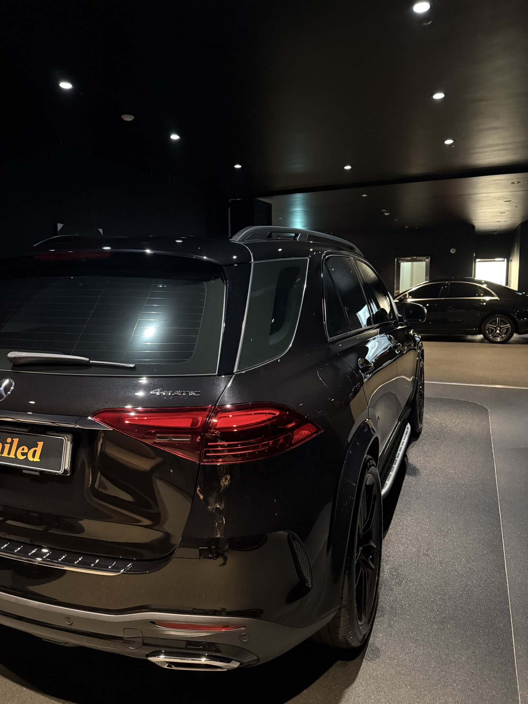
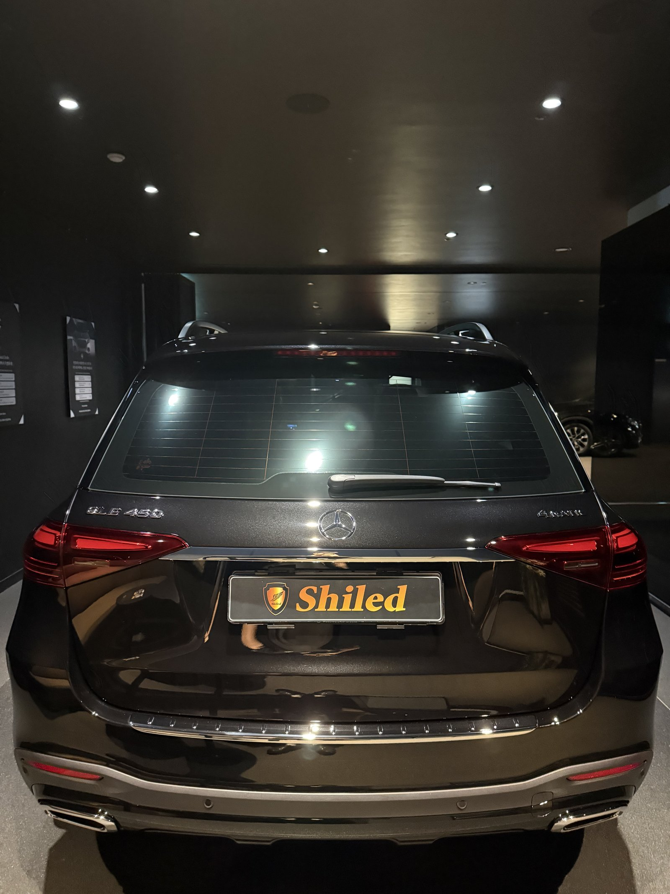
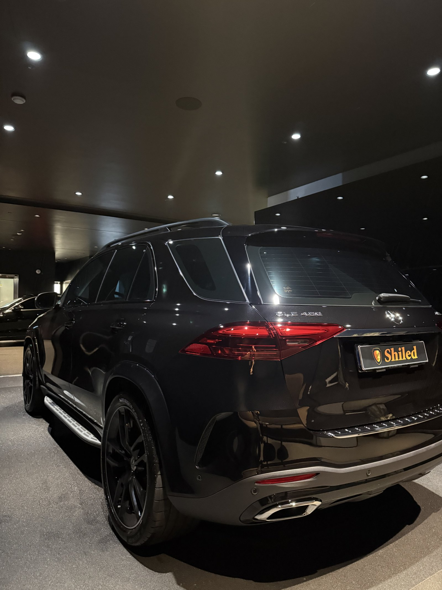
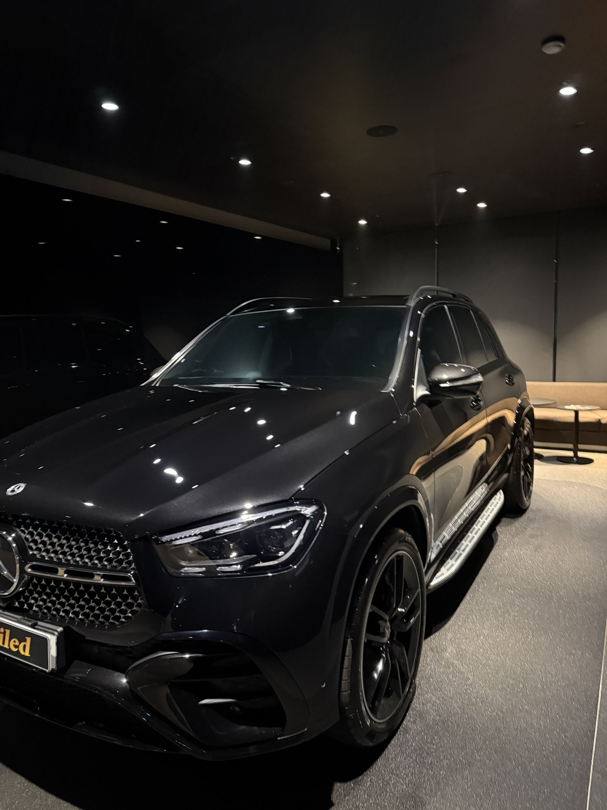
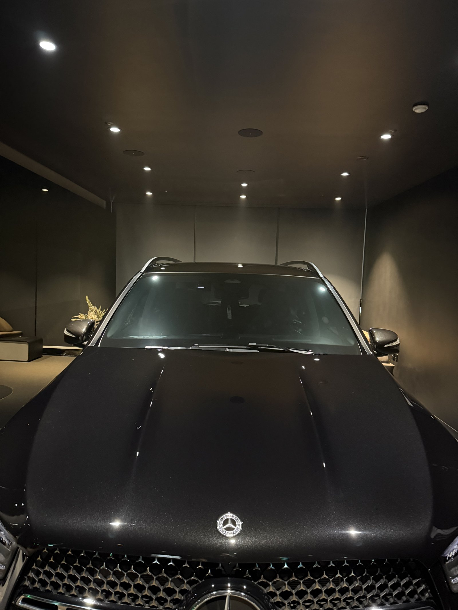
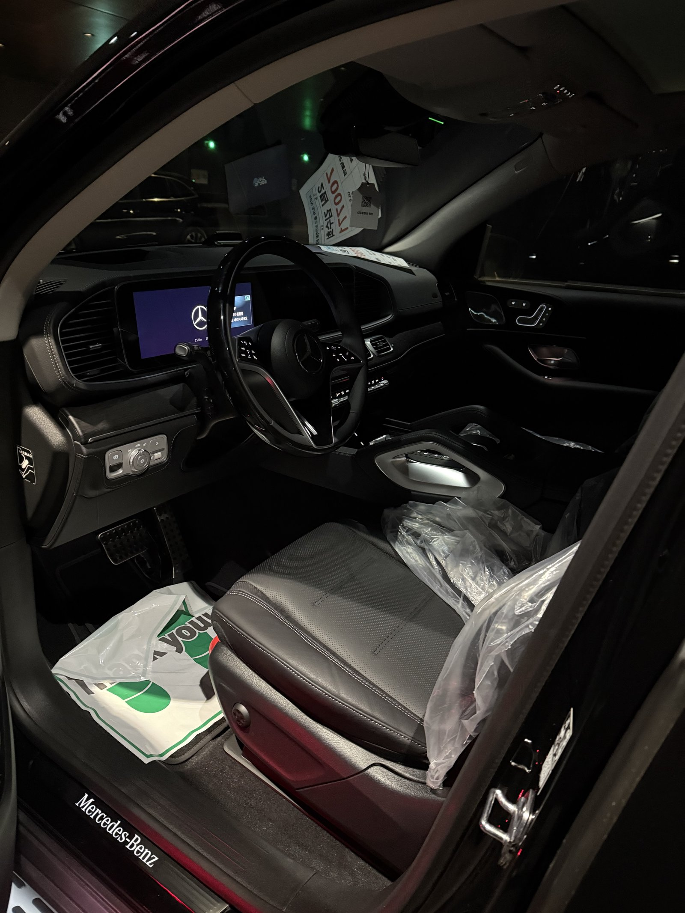
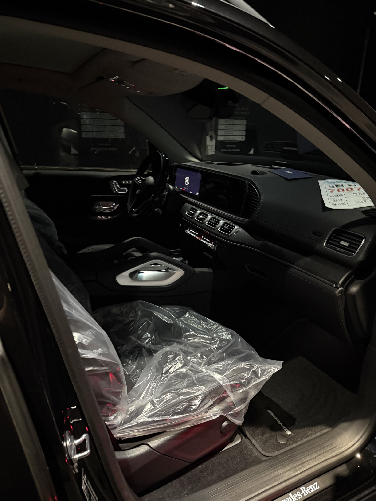
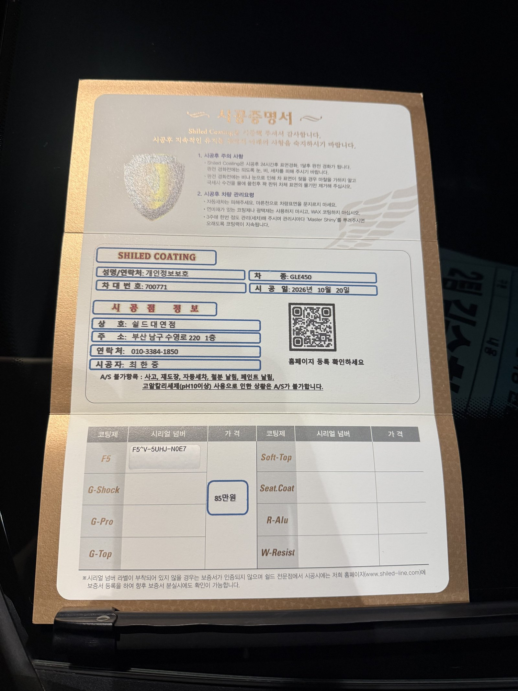

벤츠 GLE450 AMG라인, 검정 신차입니다.
블랙 휠에 블랙 실내까지, 안팎이 모두 검정인 차입니다.
출고 전 F5로 진행한 부산 유리막코팅 기록입니다.

올블랙 SUV는 어디부터 보나요?
보닛과 루프입니다.
GLE는 보닛이 길고 루프가 높아 면적이 넓습니다.
넓은 검정 면은 코팅제가 덜 닦인 자리가 조명에 바로 비칩니다.
어두운 공간에서 조명을 보닛과 측면에 비춰가며 확인했습니다.



SUV 뒤쪽은 어떻게 마무리하나요?
테일게이트와 뒤 범퍼 크롬 라인 사이는 손이 덜 가는 자리입니다.
루프레일 아래와 리어 스포일러 끝도 따로 닦아냈습니다.
블랙 휠 주변 펜더 안쪽 라인까지 확인했습니다.



기술자의 팁
대형 SUV는 루프까지 손이 잘 닿지 않습니다. 세차 때 발판을 쓰시고, 루프 물기를 먼저 걷어야 측면에 물줄기 자국이 남지 않습니다.
GLE450 AMG에 F5를 올린 이유
F5는 색감의 깊이와 글로시함에 특화된 코팅입니다.
올블랙 차량은 검정의 깊이가 곧 차의 인상입니다.
넓은 면에 비친 조명이 또렷하게 맺히는 것을 기준으로 마감했습니다.
코팅제는 대표가 직접 개발·제조한 제품입니다.
이번 부산 유리막코팅은 F5 싱글로 진행했습니다.


시공증명서도 함께 드립니다
모든 시공 차량에 시공증명서를 드립니다.
차종·시공일·코팅제 시리얼 번호가 적혀 있고, 홈페이지에 등록해 보증을 받으실 수 있습니다.

차종·시공일·코팅제 시리얼이 기재된 시공증명서
자주 묻는 질문
Q. 올블랙 GLE에 F5를 고른 이유는 무엇인가요?
A. F5는 색감 깊이와 글로시함에 특화된 코팅입니다. 안팎이 모두 검정인 차는 검정의 깊이가 인상을 좌우합니다.
Q. 대형 SUV 루프는 어떻게 세차하나요?
A. 발판을 쓰셔서 루프부터 씻고 물기를 먼저 걷어 주십시오. 루프 물이 흘러내리며 측면에 줄 자국을 남깁니다.
Q. 블랙 휠은 따로 관리해야 하나요?
A. 블랙 휠은 브레이크 분진이 쌓이면 회색으로 뜹니다. 휠 전용 세정제로 주기적으로 씻어 주시는 것이 좋습니다.
Q. 왜 출고 전에 코팅하나요?
A. 도장면이 가장 깨끗할 때 올린 코팅이 가장 오래갑니다. 운행과 세차로 잔기스가 생기기 전에 입혀두는 것이 핵심입니다.
Q. 쉴드광택 위치와 예약은 어떻게 하나요?
A. 부산 남구 유엔로220 1F 쉴드광택입니다. 예약·상담은 010-3384-1850, 대표 최한중이 직접 상담하고 책임 시공합니다.
새 차일수록 시작점이 다릅니다. 가장 깨끗할 때 입혀두십시오.
제품을 직접 만드는 사람이 직접 시공합니다.
부산에서 신차 유리막코팅을 고민 중이시면 편하게 연락 주십시오.
어떤 차를 타냐보다 어떻게 타냐가 중요합니다~!
시공 중에는 전화를 받지 못할 때가 많습니다.
카카오톡으로 차종과 원하시는 시공을 남겨주시면 확인 후 답변드립니다.
쉴드광택 · 부산 남구 유엔로220 1F · 대표 최한중